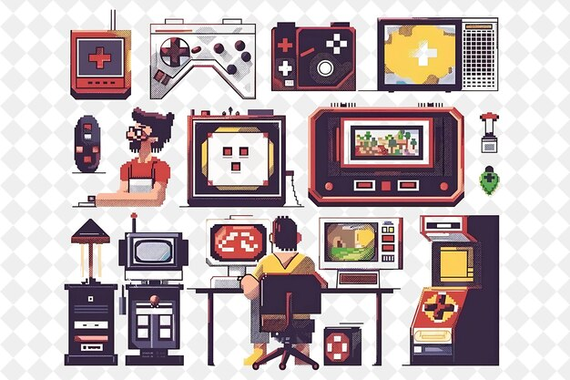

La historia de los videojuegos tiene su origen en la década de 1940 cuando, a mediados de la Segunda Guerra Mundial, las potencias vencedoras construyeron los primeros ordenadores programables como ENIAC, de 1946. Los primeros intentos por implementar programas de carácter lúdico (inicialmente programas de ajedrez) no tardaron en aparecer, y se fueron repitiendo durante las siguientes décadas. Los primeros videojuegos modernos aparecieron en la década de los 60, y desde entonces el mundo de los videojuegos no ha dejado de crecer y desarrollarse con el único límite que le ha impuesto la creatividad de los desarrolladores y la evolución de la tecnología.
